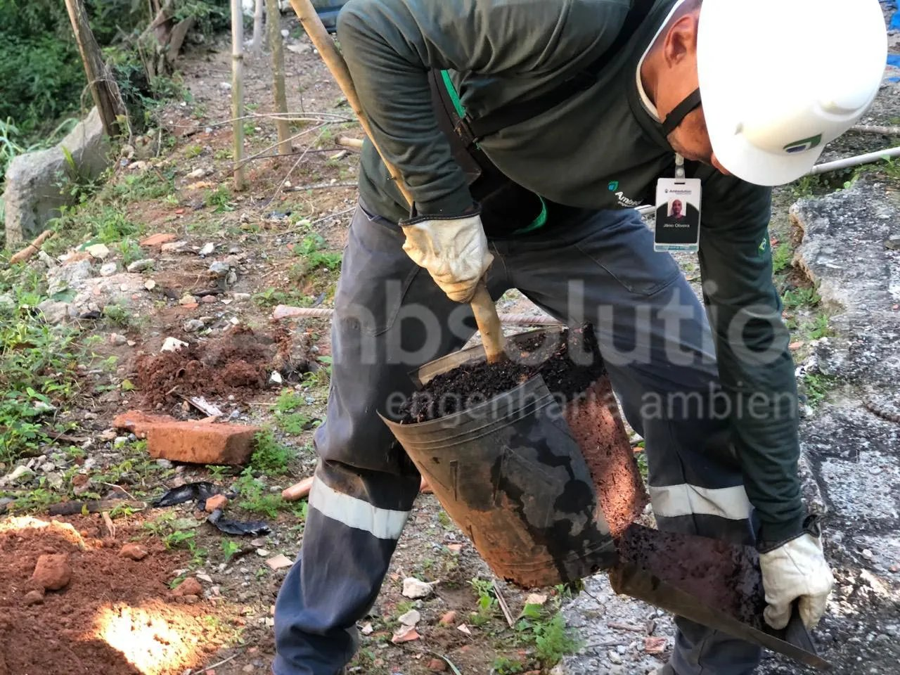
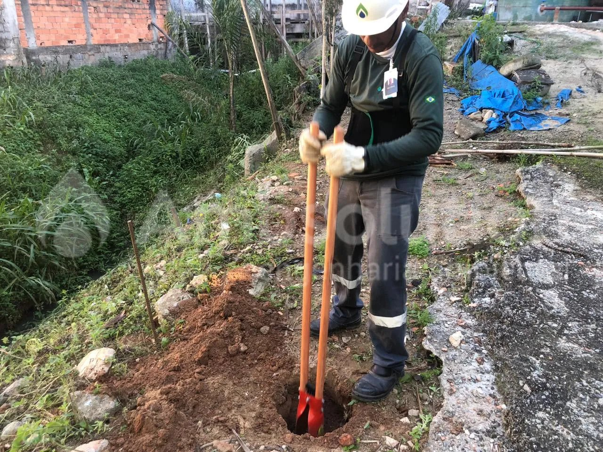

Projetos
Reflorestamento e Compensação Ambiental
A Ambsolution, ao realizar projetos de reflorestamento e compensação ambiental, cuida de todo o processo, desde a parte burocrática até a execução prática no terreno. Isso inclui escolher cuidadosamente a área que será compensada, desenvolver um projeto de compensação e trabalhar em conjunto com os órgãos ambientais para obter os Termos de Compensação Ambiental (TCA) ou Termo de Compensação e Recuperação Ambiental (TCRA). Depois disso, começa a execução em campo.
O processo inicial inclui a preparação do terreno através da limpeza da área, seguido pelo plantio das mudas, sempre seguindo as especificações do Termo de Ajustamento de Conduta (TAC). Quando todos os serviços de campo são concluídos, é elaborado um relatório detalhado que descreve a metodologia utilizada, as variedades de mudas que foram plantadas e o sucesso do plantio, medido pelo índice de pega das mudas.
Depois de finalizado o plantio, é designado um membro da equipe para realizar visitas mensais ao local por um período de um ano, com o objetivo de garantir a saúde e crescimento das mudas. Durante essas visitas, são realizadas atividades como irrigação, poda e adição de composto orgânico na superfície das mudas para promover seu desenvolvimento.